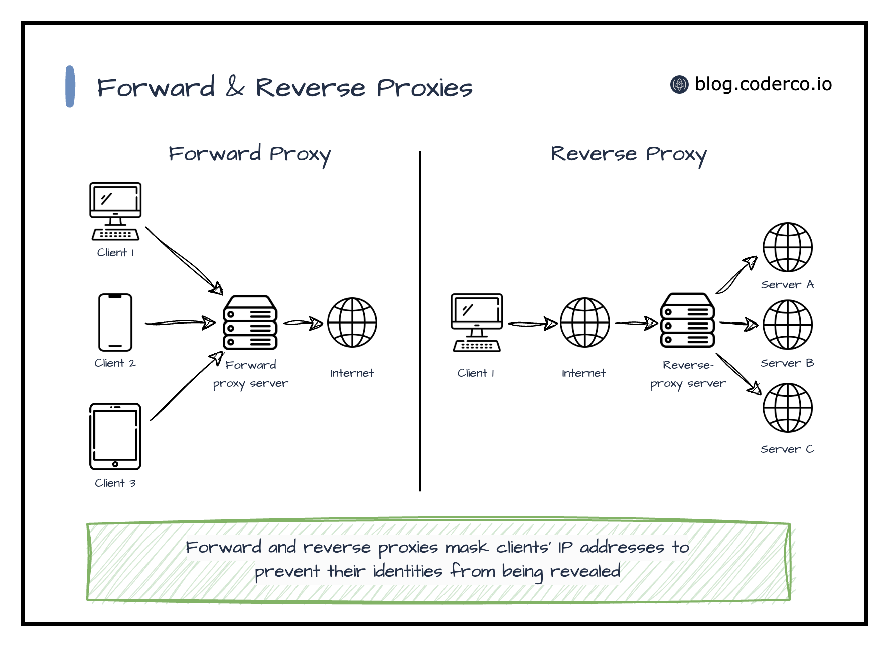
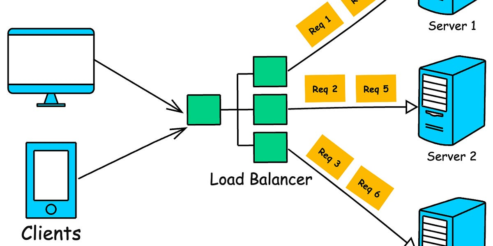

Welcome to the Nginx Tutorial
Nginx (pronounced "engine-x") is a powerful, high-performance web server, reverse proxy, and load balancer. It's known for its stability, rich feature set, simple configuration, and low resource consumption. This tutorial provides a comprehensive overview of Nginx, its architecture, and its common use cases.
What is Nginx?
Nginx was created by Igor Sysoev and first publicly released in 2004. It started as a web server to solve the C10k problem, a challenge of handling ten thousand concurrent connections. Today, Nginx is one of the most popular web servers in the world, powering millions of websites.
Core Features
- High-performance web server
- Reverse proxy with caching
- Load balancer (HTTP, TCP, and UDP)
- SSL/TLS termination
- Virtual hosting
- Static file serving
- And much more...
Nginx Architecture
Nginx has a master-worker architecture. The master process runs as a privileged user and is responsible for reading and validating configuration, binding to ports, and creating a set of worker processes. The worker processes handle the actual network connections and content delivery. This model is highly efficient and allows Nginx to handle a large number of concurrent connections with minimal overhead.
Use Case: Reverse Proxy
One of the most common use cases for Nginx is as a reverse proxy. In this setup, Nginx sits in front of one or more backend servers (e.g., application servers) and forwards client requests to them. This can provide several benefits, such as load balancing, SSL termination, and caching.
Use Case: Load Balancing
Nginx can also be used as a load balancer to distribute traffic across multiple backend servers. This improves the reliability and scalability of your application. Nginx supports several load balancing methods, including round-robin, least connections, and IP hash.
Use Case: Static Content
graph TD
A[Client sends HTTP request for a resource, e.g., /images/logo.png] --> B{NGINX receives request};
B --> C{Parse request URI};
C --> D{Match URI against 'location' blocks in configuration};
D --> E{Found matching 'location /images/' block};
E --> F{Get 'root' directory from location block, e.g., /var/www/data};
F --> G{Construct full file path: /var/www/data/images/logo.png};
G --> H{Check if file exists at the constructed path};
H -- File Exists --> I[Read file contents];
I --> J[Send file contents in HTTP response to client];
H -- File Does Not Exist --> K[Return 404 Not Found error];
Nginx is also an excellent choice for serving static content, such as HTML, CSS, JavaScript, and images. It can handle a large number of concurrent connections with high performance, making it an ideal choice for this task.
Use Case: Caching
Nginx can be used to cache content from backend servers, which can significantly improve performance and reduce the load on the backend. Nginx's caching capabilities are highly configurable and can be tailored to meet the specific needs of your application.
Conclusion
Nginx is a versatile and powerful tool for any web developer or system administrator. Its performance, stability, and rich feature set make it an excellent choice for a wide range of applications. We hope this tutorial has been a helpful introduction to the world of Nginx.